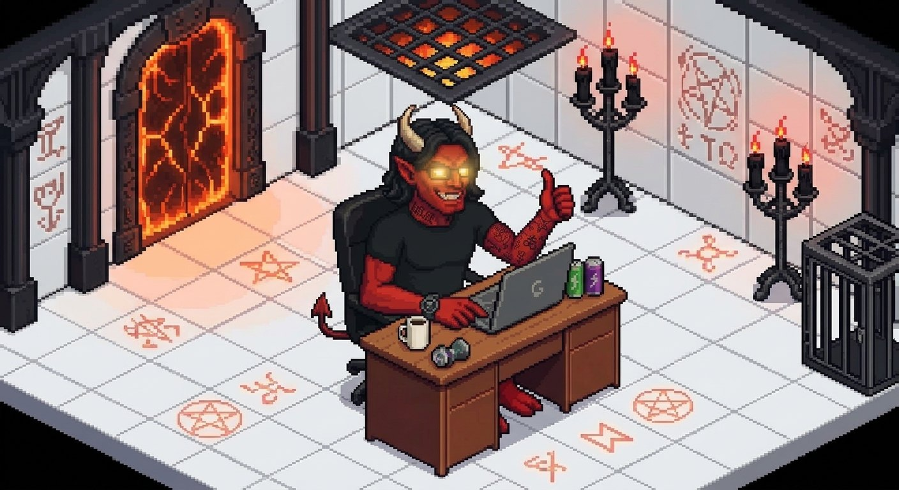

Minibia Helper
- Toca el botón para descargar la app: ⬇ Descargar Minibia Helper
- Abre el archivo descargado y toca Instalar. Si Android dice que no se permite, toca Ajustes → Permitir de esta fuente y regresa.
- Si sale Play Protect, toca Más detalles → Instalar de todas formas.
- Abre Minibia Helper, elige tu idioma, entra con tu personaje y toca el icono redondo para activar tu licencia.
- Instala la app gratuita Userscripts y ábrela una vez (no toques nada): App Store: Userscripts
- Abre esta página en Safari. Toca el botón AA (o 🧩) a la izquierda de la dirección → Administrar extensiones → activa Userscripts. Luego en ese menú toca Userscripts → Permitir siempre → en todos los sitios web.
- Toca este botón, luego AA → Userscripts → Instalar: Instalar Minibia Helper
- Entra a minibia.com/play en Safari: elige tu idioma y toca el icono redondo para activar tu licencia.
¿No te sale «Instalar» en el menú AA?
Descarga el archivo y ponlo en la carpeta de Userscripts:
Descargar archivo- Toca Descargar archivo y luego Descargar.
- Abre la app Archivos → Descargas. Mantén presionado MinibiaHelper.user.js → Mover → En mi iPhone → Userscripts → Mover. Si te pregunta, elige Reemplazar.
- Cierra y vuelve a abrir la pestaña de minibia.com/play en Safari.
- Instala la extensión Tampermonkey en tu navegador (Chrome, Edge, Firefox u Opera): Descargar Tampermonkey
- En Chrome/Edge: entra a Extensiones → Administrar, activa Modo de desarrollador y en los detalles de Tampermonkey activa Permitir secuencias de comandos de usuario.
- Haz clic aquí y en la ventana de Tampermonkey pulsa Instalar: Instalar Minibia Helper
- Entra a minibia.com/play: elige tu idioma y pulsa Ctrl+Shift+H para abrir el helper y activar tu licencia.
Necesitas una licencia para tu personaje. Cada licencia funciona solo con su personaje.

Licencias
Toca una licencia para ver todo lo que incluye.
LLite1 mesLo esencial para runear y entrenar sin estar pegado a la pantalla.
Lo esencial para runear y entrenar sin estar pegado a la pantalla.
- Runas y comida: lanza tu hechizo de runa cuando tienes maná, come solo y se detiene si la cap está baja.
- Training: ataca solo a compañeros de tu party (o monstruos como Monk), mantiene su casilla y suelta al objetivo al 15 % de vida.
- Anti-idle: evita que el juego te saque por inactividad.
- Anti-GM y botcheck: si aparece un GM o una ventana anti-bot, pausa todo y suena la alarma.
- Alertas: vida baja, cap baja, muerte y desconexión, con sonido.
- Mapa: casillas resaltadas y timers de magic wall, wild growth y hechizos.
- Perfil por personaje: cada personaje guarda su propia configuración.
Ideal si haces runas o subes skills en AFK. Funciona con un solo personaje.
Estándar1 mesTodo lo de Lite + combate automático, en todos tus personajes.
Todo lo de Lite + combate automático, en todos tus personajes.
- Todo lo de Lite.
- Todos tus personajes: la activas una vez y sirve para cualquier personaje que uses en ese dispositivo; cada uno guarda su perfil.
- Autoheal: lanza tus curas según tu % de vida (la primera regla que se cumpla).
- Autolife y Automana: usa tus pociones del hotbar cuando bajan la vida o el maná.
- Autohaste: vuelve a lanzar utani hur o utani gran hur cuando se acaba, si te alcanza el maná.
- Combo runa: cuando el líder de tu party tira una runa, cada uno tira la suya al mismo objetivo, en cadena y con retrasos humanos.
- Reinicio automático: si se cae la conexión, vuelve a entrar y sigue con lo que hacía.
Ideal si cazas tú mismo, juegas en party o haces PvP.
GoldRECOMENDADA1 mesTodo lo de Estándar + Cave hunt: la única que caza por ti, en todos tus personajes.
Todo lo de Estándar + Cave hunt: la única que caza por ti, en todos tus personajes.
- Todo lo de Estándar.
- Todos tus personajes: la activas una vez y sirve para cualquier personaje que uses en ese dispositivo; cada uno guarda su perfil.
- Ruta grabada: caminas la cueva una vez y el helper la repite: rodea paredes y obstáculos, y usa escaleras, rope y shovel en la casilla exacta.
- Combate inteligente: ataca a los monstruos de tu lista, no ataca a los que están detrás de una pared y espera en los spawns el tiempo que elijas.
- Supervivencia: se cura y toma pociones, se aleja de los monstruos con maná baja, escapa si le pegan fuerte y mantiene el autohaste mientras caza.
- Suministros: come de los cuerpos si no traes comida y cambia monedas solo (gold → platinum → crystal).
- Comodidad: rutas con nombre, casillas de colores para hoyos, rope y escaleras, y Ctrl+Shift+X para ocultarlas.
Ideal si quieres cazar en AFK y subir de nivel mientras haces otra cosa.
Las licencias Lite, Estándar y Gold duran 1 mes. Lite es para un personaje; Estándar y Gold sirven para todos tus personajes. Cuando vence, el helper se detiene y te pide la nueva. Puedes subir de licencia cuando quieras, o pedir una prueba de 1 día con todo lo de Gold: al terminar vuelves a tu licencia de antes.
Transparencia: ¿es seguro?
Minibia Helper es un pequeño programa que ayuda con tareas del juego. Así funciona, explicado fácil:
- 🎯Solo trabaja en el juego. Se activa únicamente dentro de minibia.com/play. En cualquier otra página o app no se carga ni hace nada.
- 🔒No recopila nada. No envía tus datos, tus mensajes ni lo que haces en el juego a ningún lado. Todo se queda en tu propio dispositivo.
- 🔑Tu contraseña es tuya. El helper nunca la lee ni la guarda. Si usas el reinicio automático, solo presiona «Entrar» cuando tu navegador ya la tiene guardada.
- 📥Solo descarga, nunca sube. Lo único que pide a internet es a esta misma página: si hay versión nueva y la lista de licencias canceladas. No manda nada de vuelta: es como cuando abres cualquier página web.
- 🧾Tu licencia se revisa en tu dispositivo. Se comprueba con una firma digital (como un sello que no se puede falsificar), sin mandar tus datos a ningún servidor.
- 🧩Es JavaScript, el mismo «idioma» de todas las páginas web (el que hace funcionar botones y menús). Corre dentro del navegador, junto al juego, y no puede abrir tus archivos, fotos ni otras apps.
- 📱La app de Android solo funciona mientras está abierta. Es el juego dentro de una ventana con el helper. Si la minimizas, sigue trabajando y verás la notificación «Minibia Helper»; si la cierras desde Recientes, se detiene por completo.
- 🛡️Permisos de la app: solo internet (para el juego), notificaciones, vibración y seguir activa en segundo plano. No pide contactos, fotos, ubicación, cámara, micrófono ni mensajes.
- 💾Tu configuración se guarda en tu dispositivo, por personaje. Si borras la app o los datos del navegador, se borra con ellos.